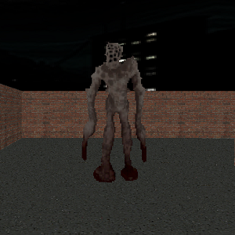
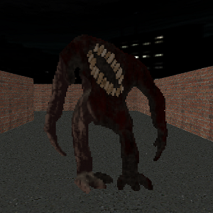

LACERATOR Devlogs
Welcome to the LACERATOR Devlog.

Welcome to the LACERATOR Devlog.
EXTREME LEVELS OF DEMON KILLING AWESOMENESS INCOMING
First log. First, I should probably explain what LACERATOR is. Lacerator is a classic DOOM-inspired FPS made using the Easy FPS Editor (EFPSE) Engine. I chose this engine mainly because it requires very little programming knowledge to make stuff with, and I just like how games made with it look. The engine has its own programming language which the entire syntax of fits within 2 pages. The engine has quite a few limitations, but they don't matter much for the type of project I'm making.
Anyways, enough about the engine. What actually IS LACERATOR??? Well like I said, LACERATOR (also yes, I am going to spell it all caps. Every time.) is heavily inspired by the original DOOM games. I absolutely love the original DOOMs. Something about the crustiness, the unique enemies, maze-like levels and just the genuinely good design made it so fun.
So with LACERATOR, I'm taking my love of DOOM, 3D modeling, and game design to make something that people will hopefully like! Right now, progress is going relatively smoothly. I've created the first level (it isn't very detailed but it works!) 2 weapons: The Drill and The Revolver. And 2 enemies: The Paleskin and The Brute.
The Paleskin is a pretty standard demon. Just shoots projectiles at you. Their backstory is way more interesting than their gameplay, though. I've had this idea floating around my head for a while about a monster that has it's skeleton on the outside, and guts on the inside. And they have a ton of holes in them they can dig into so they can grab that flesh and fling it at any unsuspecting bystander. That essentially became the Paleskin. I'm also gonna use this opportunity to explain how I make the sprites for these nasty creatures. I start off by sculpting a 3D model of the enemy (even the parts that will literally never be seen) using Blender. I then texture it using Substance 3D Painter. As much as adobe sucks, this is a pretty good product. After that I reimport the model back into Blender, give it a rig so it can move its arms and legs and all that, then create different poses for things like attacking, walking, dying, etc.
THE BRUTES!!! The Brutes are these big stupid mouthbreathers that run at you and try to bite you. I created them to make Paleskin encounters more interesting. Since you can easily just sidestep to avoid their projectiles, the brutes force you to run around avoiding them, making predicting Paleskin projectiles harder, and making aiming harder. Theres basically no story behind them, I just drew it once, thought it looked cool and added it to the game.
I should probably talk about the story of this game now. Its not too complicated. You're playing as a good Christian boy named Mark. Demons invade your city and start killing everyone, God wants you to stop them! Now grab a Drill and start gutting those demons! Its slightly more in-depth than that but that's basically what it is.
Now I think you're caught up with all of whats happening. The plan for the future is basically to just finish the first episode. 8 levels and 1 secret, just like DOOM. I plan on releasing the first episode for free on itch.io or steam or whatever. Then finishing up the last 2 episodes and making that paid. Anyways, thanks for reading this long! I hope to see you again! Bye!!!